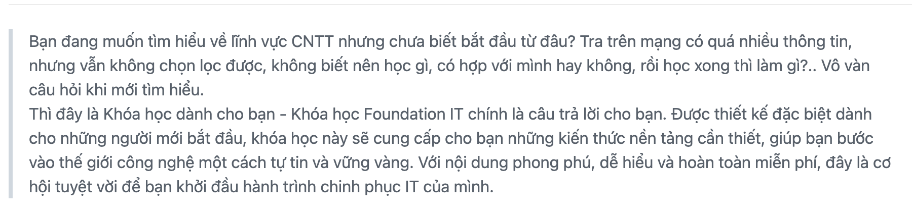
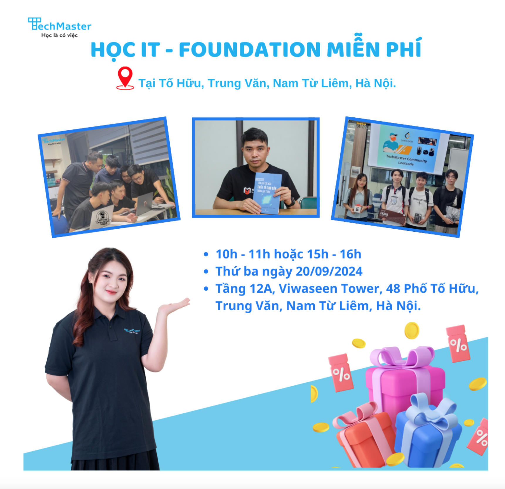

TECHMASTER MỞ KHÓA HỌC IT FOUNDATION MIỄN PHÍ
20 tháng 08, 2024 - 128 lượt xem
lâp trình web
di động
Lập trình
Techmaster

TECHMASTER MỞ KHÓA HỌC IT FOUNDATION MIỄN PHÍ
Link đăng ký:
https://techmaster.sg.larksuite.com/share/base/form/shrlgfuCkTZRD2Ai9T0dN0KMQBb
Đối tượng: Người mới bắt đầu muốn tìm hiểu về Công nghệ thông tin
Lịch khai giảng: 20/9/2024 (Hạn đăng ký: 10/9/2024)
Thời gian học: 2 ca (Sáng: Từ 10:00 đến 11:00 hoặc Chiều: Từ 15h00 đến
16h00). Tổng: 3 buổi MIỄN PHÍ 100%
Địa điểm học: Tầng 12A, Viwaseen Tower số 48 Tố Hữu, Trung Văn, Nam Từ
Liêm, Hà Nội.
Cơ hội trải nghiệm lớp học về Công nghệ thông tin cho người mới bắt đầu
tại TechMaster - cực kỳ vui vẻ, hiệu quả, tràn đầy năng lượng:
Tìm hiểu về khái niệm CNTT.
Mục tiêu của CNTT.
Các bộ môn trong CNTT.
Các môn học trong CNTT.
Nghề nghiệp trong CNTT.
Định hướng nghề nghiệp liên quan đến CNTT.
Học Free nhưng 100% có #Quà mang về đó
nha:
Tất cả các bạn tham gia đều có cơ hội nhận những món quà lưu niệm mang
thương hiệu TechMaster.
Voucher giảm tới 20% học phí tại TechMaster.
Giới thiệu chút về Giảng viên của lớp
Anh Tạ Văn Dũng:
Giám đốc điều hành của TechMaster Việt Nam.
Nhà sáng lập tổ chức mã nguồn mở Young Monkeys.
Là tác giả của hai cuốn sách: 1. Làm chủ các mẫu thiết kế kinh điển trong
lập trình. 2. Những nguyên tắc sống còn trong lập trình.
Đồng tác giả của cuốn AI cho người mới bắt đầu sắp ra mắt trong năm 2024.
Trưởng nhóm cũ của 2 dự án blockchain tại LINE Technology Việt Nam.
Nhanh tay đăng ký
link trên. Liên hệ: Ms Mẫn - 0963023185 (zalo)
